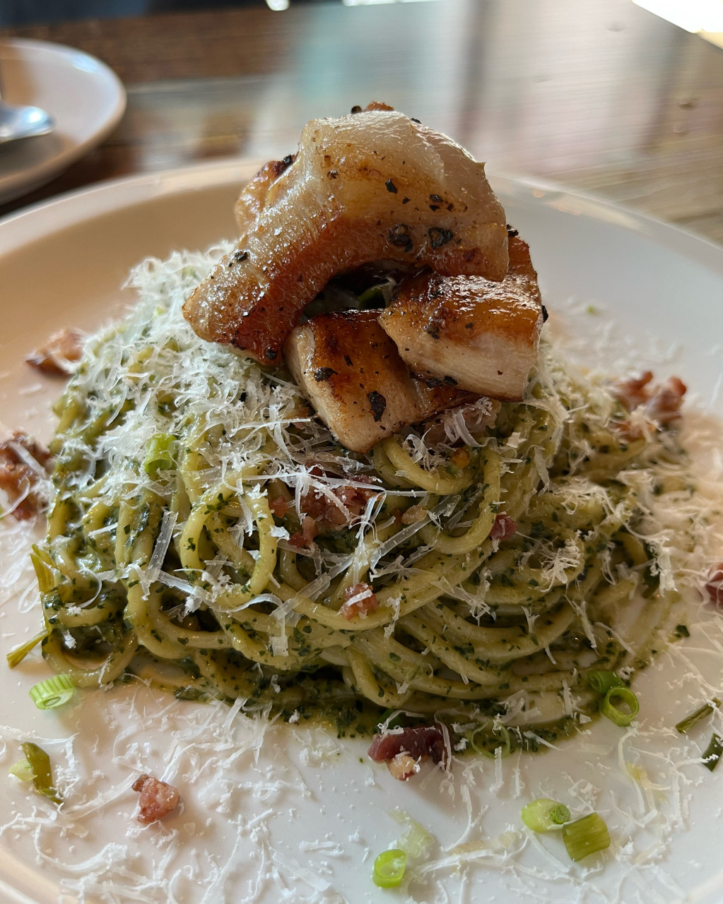
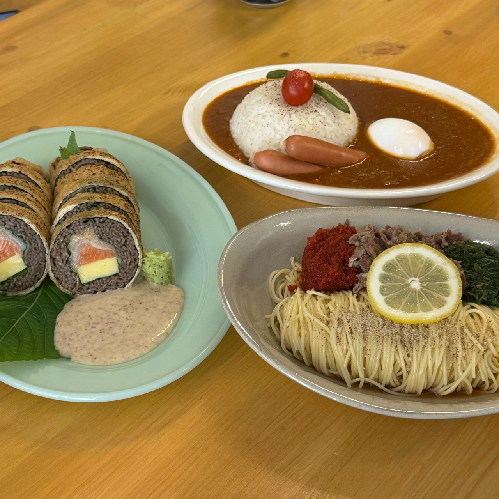
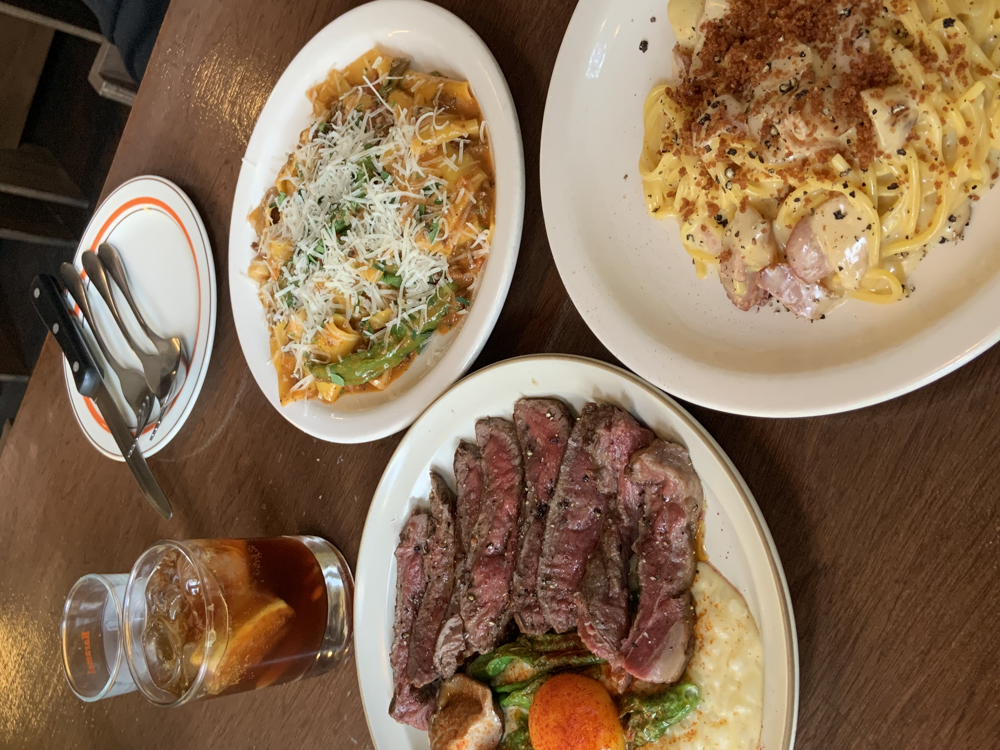

안녕하세요! 여러분의 입맛을 사로잡을 최고의 양식 레스토랑 다섯 곳을 소개해드리겠습니다.
이곳들은 각기 다른 개성과 매력으로 여러분에게 잊지 못할 미식 경험을 선사할 것입니다.
프랑스, 이탈리아, 스페인 등 유럽 각국의 정통 요리를 맛볼 수 있는 이 레스토랑들은 신선한 재료와 셰프의 정성이 담긴 요리로 유명합니다.
지금부터 하나씩 살펴보시죠!
안녕하세요! 여러분의 입맛을 사로잡을 최고의 양식 레스토랑 다섯 곳을 소개해드리겠습니다.
이곳들은 각기 다른 개성과 매력으로 여러분에게 잊지 못할 미식 경험을 선사할 것입니다.
프랑스, 이탈리아, 스페인 등 유럽 각국의 정통 요리를 맛볼 수 있는 이 레스토랑들은 신선한 재료와 셰프의 정성이 담긴 요리로 유명합니다.
지금부터 하나씩 살펴보시죠!
✔️ 매장 정보
이 집은 탄방초 근처에 있는 양식집입니다. 인스타를 둘러보다 알게 된 곳인데 너무나 맛있었던 곳이라 소개를 할까합니다!
헤이스팅스는 리조또, 스테이크, 파스타 등 다양한 양식을 판매하고 있습니다.
그 중 저느 깻잎페스토 파스타와 피자가 유명한 곳으로 알려져 있길래 피자도 같이 먹었습니다!
깻잎 페스토는 많이 들어는 봤지만 먹어본 적이 없어 살짝 의심이 들었는데 생각보다 깻잎향이 세게 나지 않아서 저는 좋았습니다!
파스타 위에는 항정살이 올라가 있는데 너무나도 잘어울리고 피자도 너무 맛있었습니다!

사진만 봐도 너무 맛있어 보이지 않나요? 공간이 살짝 협소해 웨이팅이 잠깐 있었지만 너무나도 맛있어서 감수할 수 있었습니다!
탄방동 방문하실 일이 있으시다면 방문해보시는 것도 좋을 것 같습니다.
✔️ 매장 정보
이 집은 시청역 근처에 있는 곳입니다. 사실 세서미 하우스는 양식보다는 퓨전음식 주점?이 더 맞는 것 같지만
이곳에서 판매하고 있는 청어알 카펠리니가 너무 맛있어 소개하려 합니다!
청어알 카펠리니가 조금 생소하실 수도 있지만 청어알, 차돌박이, 들기름, 깻잎페스토가 어우러진 고소하고 산뜻한 음식입니다!
이 음식 말고도 연어 유부롤, 쉬림프 라이스 등 안주와 다양한 주류도 있습니다!

저는 항상 이 세가지 음식으로 보면 여름이 생각나는데 ,, 뭔가 여름이랑 잘 어울리는거 같지 않나요?! ㅋㅋㅋㅋㅋ
19시 이후에는 매장이 은은한 불빛으로만 운영이되서 분위기 있는 식사를 하고 싶으시면 방문하시는거 추천드립니당!
주키니 고추장 찌개도 맛있다해서 다음에 도전해보려구요!
✔️ 매장 정보
카라멜은 제가 생면 파스타를 처음 먹어봤던 곳입니다! 매장 분위기도 잔잔하고 저는 30분 정도 웨이팅을 했었습니다 ㅜ_ㅜ
러프한 다이닝과 음악을 지향하는 캐주얼한 프레쉬 누들바를 추구하는 곳입니다. 그래서 그런지 음악 선곡이 너무나도 좋았습니다.
카라멜은 건면이 아닌 생면을 사용하여 파스타를 만들고 뇨끼, 리조또, 알배추 샐러드, 스테이크 등 다양한 음식과
간단하게 같이 먹을 주류도 판매하고 있습니다!
저는 라구 파스타, 까르보나라, 채끝 스테이크 리조또를 먹었습니다!

3가지 음식다 녹진한 소스가 일품이었습니다! 진짜로 너무 맛있다는 말 밖에 안나오는 곳입니다 ㅠㅠ!
웨이팅이 좀 심할때도 있지만 웨이팅을 할만큼 정말 맛있는 곳입니다!
평일 오픈하는 시간에 맞춰서 가면 웨이팅이 별로 없다하니 평일에 시간 남으시면 꼭 가보시길 추천합니다!!
진짜로 여기 완전 맛있어요 ㅠㅠㅠㅠㅠㅠ